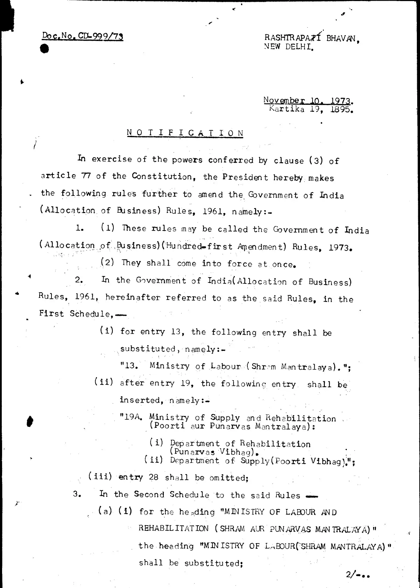
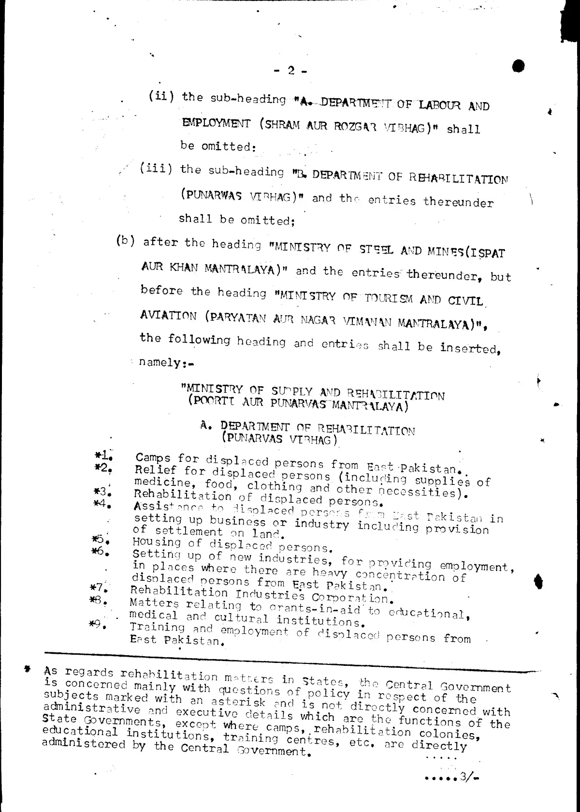
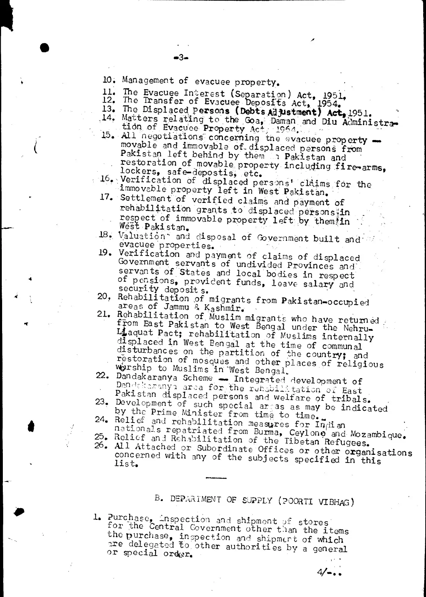
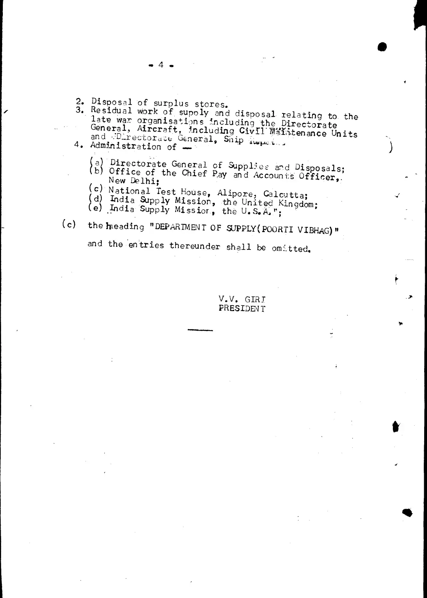
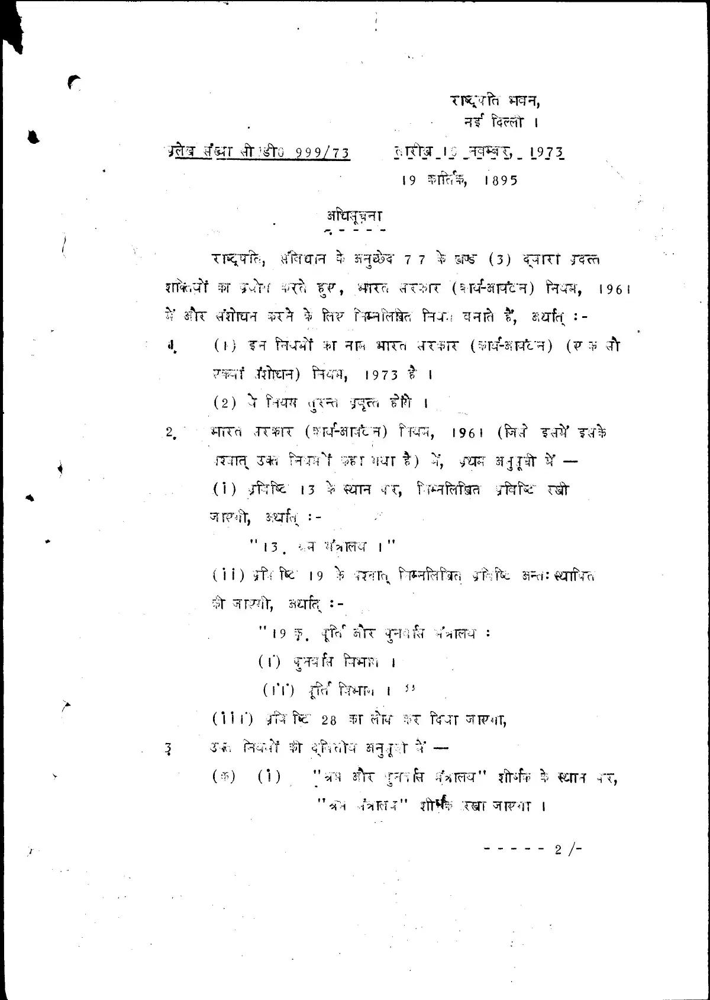
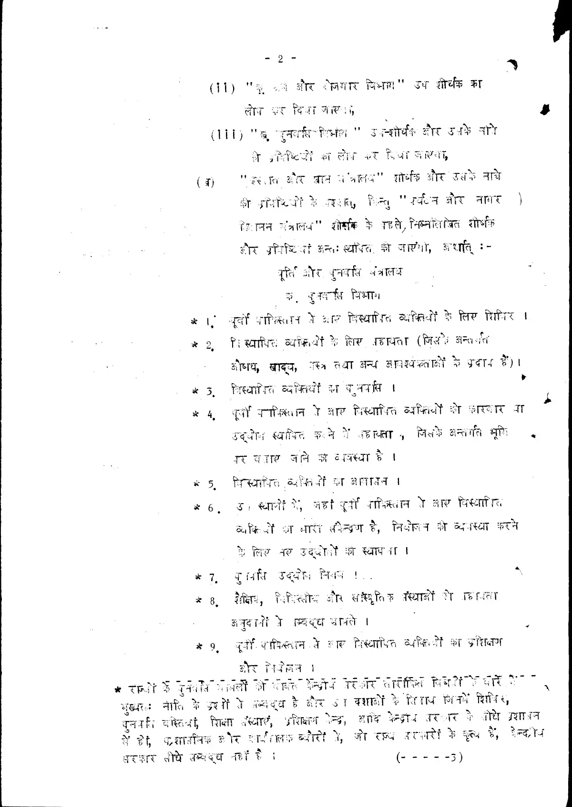
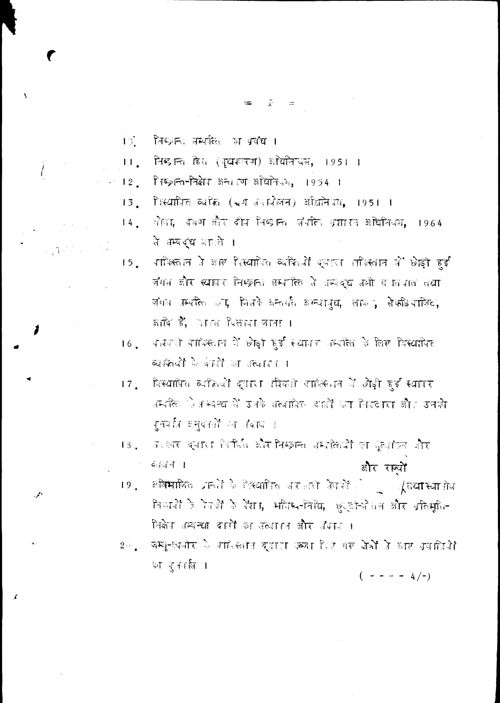
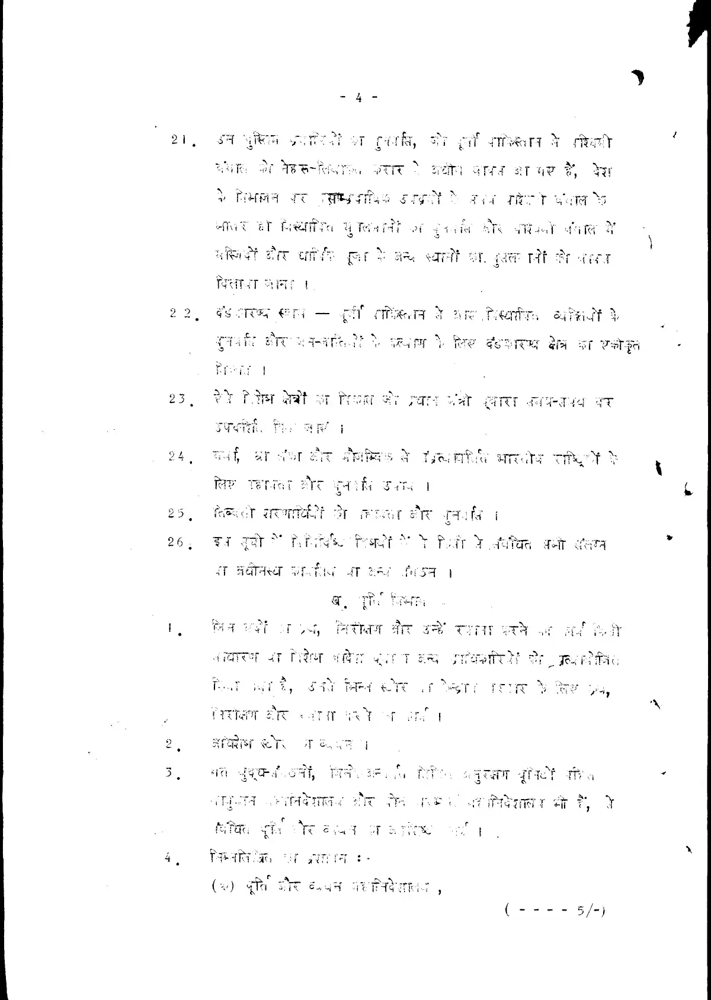
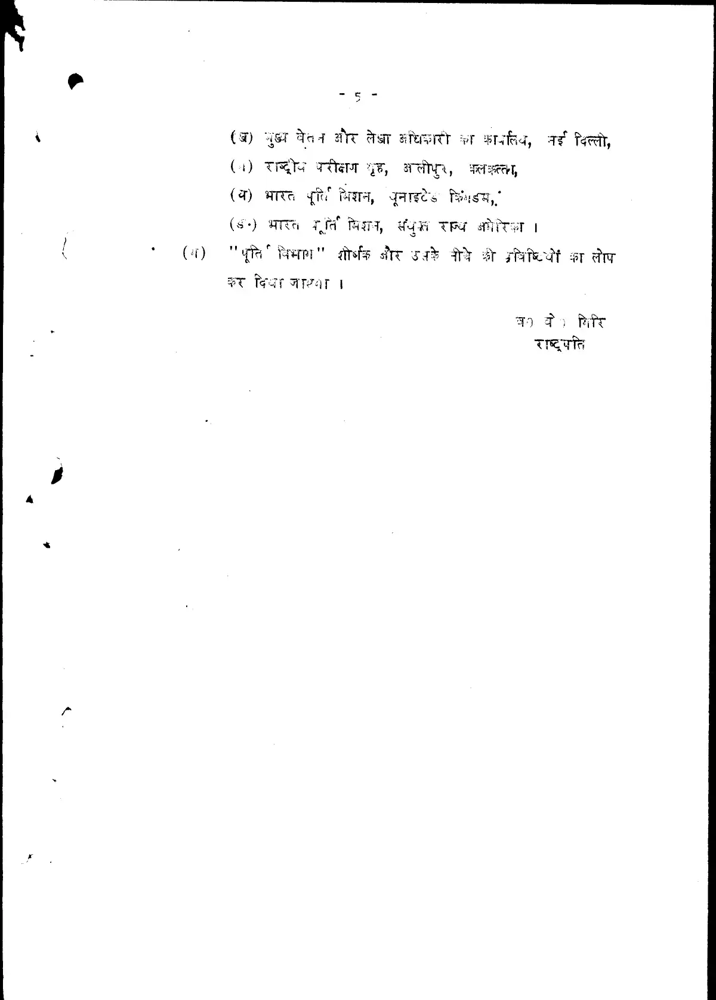
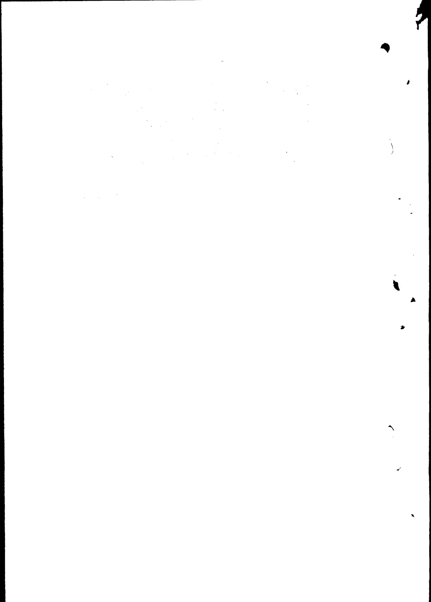

Amendment #101 (S.O. 696(E), 1973)
8 changes: 3 to the First Schedule, 5 to the Second Schedule. 7 applied1 not applied
What it did to the ministries
- splitMinistry of Labour and Rehabilitation splits into Ministry of Labour (38) and Ministry of Supply and Rehabilitation (24) change 1, 2, 4, 5, 6, 7 · histories: Labour and Rehabilitation, Labour and Employment, Supply
- absorbedDepartment of Supply joins Ministry of Supply and Rehabilitation (3 subjects) change 2, 3, 7 · histories: Supply, Supply
The order, page by page
Page 1 of 10

1234Schedule 1 › entry 13
- 13. Ministry of Labour
applied at schedule 1 › ministry 13 in the Rules after #101
after Schedule 1 › entry 19
- 19A. Ministry of Supply and Rehabilitation
- i. Department of Rehabilitation
- ii. Department of Supply
applied at schedule 1 › ministry 19A in the Rules after #101
Schedule 1 › entry 28
applied at schedule 1 › department 28 in the Rules after #101
Schedule 2 › MINISTRY OF LABOUR AND REHABILITATION
- MINISTRY OF LABOUR
applied at schedule 2 › ministry MINISTRY OF LABOUR in the Rules after #101
Page 2 of 10

567Schedule 2 › MINISTRY OF LABOUR › DEPARTMENT OF LABOUR AND EMPLOYMENT
not applied (the change could not be placed in the Rules as read; see How this document was read)
Schedule 2 › MINISTRY OF LABOUR › DEPARTMENT OF REHABILITATION
applied at schedule 2 › ministry MINISTRY OF LABOUR › department B in the Rules after #101
after Schedule 2 › MINISTRY OF STEEL AND MINES
- MINISTRY OF SUPPLY AND REHABILITATION
- A. DEPARTMENT OF REHABILITATION (PUNARVAS VIRHAG).
- 1. Camps for displaced persons from East Pakistan.
- 2. Relief for displaced persons (including supplies of medicine, food, clothing and other necessities).
- 3. Rehabilitation of displaced persons.
- 4. Assistance to displaced persons from East Pakistan in setting up business or industry including provision of settlement on land.
and 29 more
- 5. Housing of displaced persons.
- 6. Setting up of new industries, for providing employment in places where there are heavy concentration of displaced persons from East Pakistan.
- 7. Rehabilitation Industries Corporation.
- 8. Matters relating to orants-in-aid to educational medical and cultural institutions. Training and employment of displaced persons from East Pakistan. As regards rehabilitation matters in States, the Central Government is concerned mainly with questions of policy in respect of the subjects marked…
- 10. Management of evacuee property.
- 11. The Evacuee Interest (Separation) Act, 1951
- 12. The Transfer of Evacuee Deposits Act, 1954.
- 13. The Displaced persons (Debts Adjustment) Act, 1951.
- 14. Matters relating to the Goa, Daman and Diu Administra tion of Evacuee Property Act, 1964
- 15. All negotiations concerning the evacuee property movable and immovable of displaced persons from Pakistan left behind by them n Pakistan and restoration of movable property including firearms lockers, safe-depostis, etc.
- 16. Verification of displaced persons' claims for the immovable property left in West Pakistan.
- 17. Settlement of verified claims and payment of rehabilitation grants to displaced persons in respect of immovable property left by them in West Pakistan.
- 18. Valuation and disposal of Government built and evacuee properties.
- 19. Verification and payment of claims of displaced Government servants of undivided Provinces and servants of States and local bodies in respect of pensions, provident funds, leave salary and security deposits.
- 20. Rehabilitation of migrants from Pakistan-occupied areas of Jammu & Kashmir.
- 21. Rehabilitation of Muslim migrants who have returned from East Pakistan to West Bengal under the Nehru- Liaquat Pact; rehabilitation of Muslims internally displaced in West Bengal at the time of communal disturbances on the partition of the country; and restoration of mosques and other places of…
- 22. Dandakaranya Scheme - Integrated development of Dandɛkaranya area for the rehabilitation of East Pakistan displaced persons and welfare of tribals.
- 23. Development of such special arças as may be indicated by the Prime Minister from time to time.
- 24. Relief and rehabilitation measures for Indian nationals repatriated from Burma, Ceylone and Mozambi que.
- 25. Relief and Rehabilitation of the Tibetan Refugees.
- 26. All Attached or Subordinate Offices or other organisations concerned with any of the subjects specified in this list.
- B. DEPARTMENT OF SUPPLY
- 1. Purchase, inspection and shipment of stores for the Central Covernment other than the items the purchase, inspection and shipment of which are delegated to other authorities by a general or special order. 4/-.. - 4.
- 2. Disposal of surplus stores.
- 3. Residual work of supply and disposal relating to the late war organisations including the Directorate General, Aircraft, including Civil Maintenance Units and Directorate General, Ship
- 4. Administration of - ) Directorate General of Supplies and Disposals Office of the Chief Pay and Accounts Officer,. New Delhi c) National Test House, Alipore, Calcutta
- d. India
- d. India Supply
- e. India Supply Mission Supply Mission, the United Kingdom Missior, the U.S.A.
applied at schedule 2 › ministry MINISTRY OF SUPPLY AND REHABILITATION in the Rules after #101
read page break
Page 3 of 10

Page 4 of 10

8Schedule 2 › DEPARTMENT OF SUPPLY
applied at schedule 2 › department in the Rules after #101
Page 5 of 10

Page 6 of 10

Page 7 of 10

Page 8 of 10

Page 9 of 10

Page 10 of 10

How this document was read
Known issues
| Change | Issue | Known as |
|---|---|---|
| 5 | change 5: no department DEPARTMENT OF LABOUR AND EMPLOYMENT under schedule 2 › ministry MINISTRY OF LABOUR | A unit cited by a name the Second Schedule does not have |
From the Government of India (Allocation of Business) Rules, 1961 and their amendments, as published by the Cabinet Secretariat (cabsec.gov.in), read by orgpedia. The readings of the older scanned gazettes have known gaps.